I am a Mechatronics and Control Engineer focused on intelligent systems. I build robotics, automation, and embedded solutions for real-world applications.
I am a Mechatronics and Control Engineer with experience in CAD/CAM, CNC programming, embedded systems, control systems, robotics, automation, and machine learning applications. My work focuses on developing practical engineering solutions that combine mechanical design, electronics, control, and software into reliable and functional systems.
I have hands-on experience in CAD modeling, concept development, parametric design, CNC toolpath generation, G-code programming, prototyping, and manufacturing workflows. I also work on embedded and control systems using Arduino and Raspberry Pi, implementing techniques such as PID control, fuzzy logic, robotics control, machine vision, and object detection.
Alongside design and hardware development, I use MATLAB/Simulink, Python, OpenCV, and SQL for simulation, data analysis, system modeling, and engineering problem-solving. My approach is focused on building working prototypes, technically accurate systems, and real-world engineering solutions from concept to implementation.
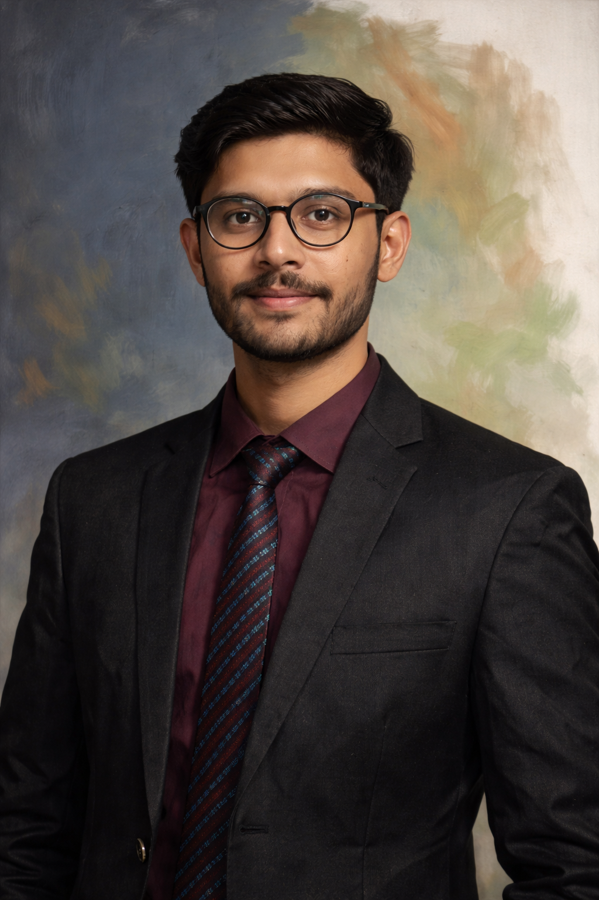
Daira Engineering
Aug 2024 – Present
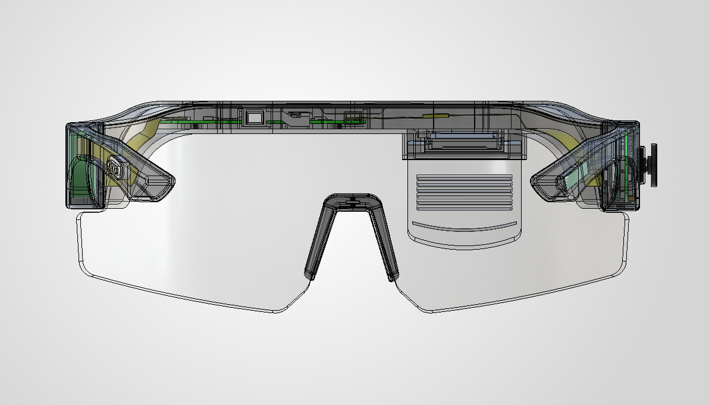
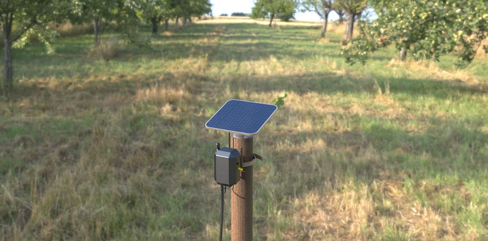
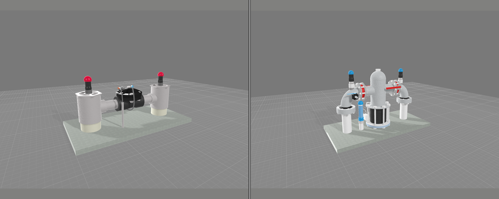
At Daira Engineering, I worked across mechanical design, electronics integration, and control systems to develop end-to-end automation solutions. I designed AR glasses with a focus on compact integration, material selection, and thermal management for wearable constraints. I engineered a hair extension automation machine, covering mechanical design, embedded electronics, Raspberry Pi integration, and synchronized multi-motor control. I also developed a computer vision pipeline for real-time hair detection to enable intelligent system operation. In parallel, I built AI and security applications on the STM32N6570-DK platform, developing optimized algorithms from scratch for embedded deployment. My work emphasized system reliability, precise control, and seamless integration across hardware and software layers.
Independent Engineering Consultant | Upwork
Jan 2024 – Present
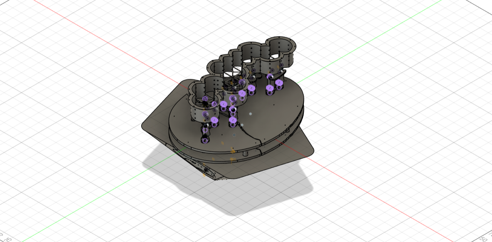
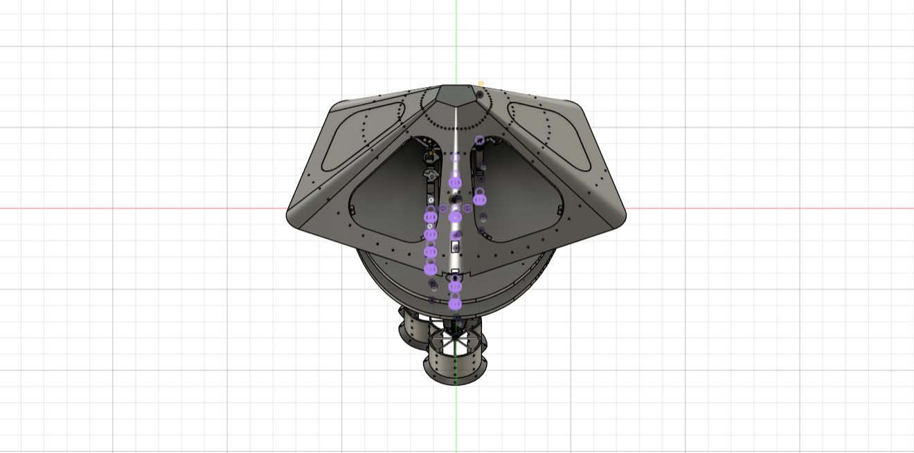
As an Independent Mechatronics and Control Engineer, I worked on automation, CAD/CAM, robotics, and embedded system projects for international clients. I developed mechanical systems and manufacturing-ready designs using Fusion 360 and SolidWorks, including projects related to DADS (Digital Assisted Disassembly and Sorting) workcells, mobile phone disassembly and assembly mechanisms, CNC systems, and automated machinery concepts. I also worked on embedded electronics, motion control, and AI-based solutions involving computer vision, fuzzy logic, and machine learning for intelligent automation applications. My work focused on practical engineering implementation, system integration, prototyping, and delivering reliable solutions across mechanical, electrical, and control engineering domains.
Projects
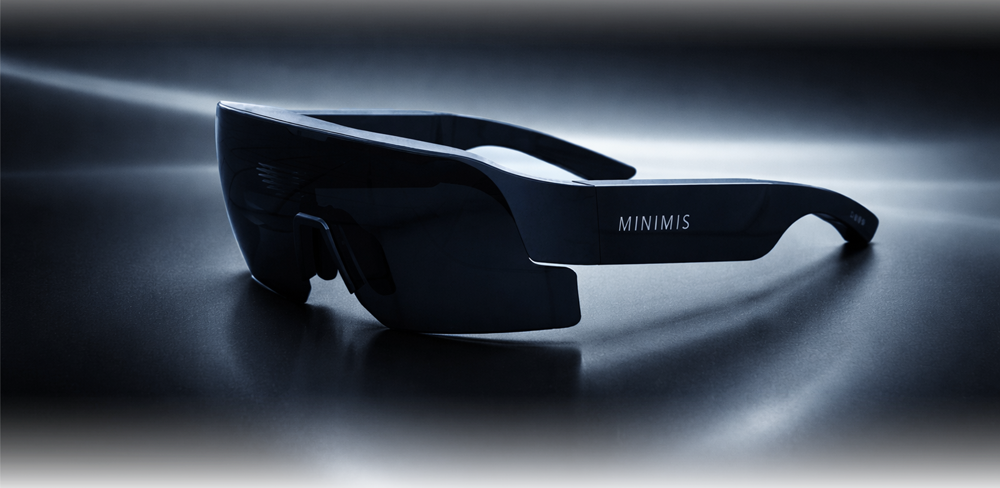
Augmented Reality Glasses
Daira Engineering × Minimis, 2024–Present
Sports-focused AR eyewear product developed around mechanical architecture, mechatronics packaging, custom hinge direction, FPC integration, prototype validation, and production-intent refinement.
Real international smart irrigation automation project supported with remote web/app control, dashboard visualization, and 20+ 3D/OBJ assets for filtration units, valve stations, VFDs, controllers, sensors, and field blocks.
A prototyping-stage edge AI product platform using STM32N6570-DK and YOLOv11, designed to support vision applications across manufacturing, healthcare, safety, and security.
Registered Mechatronics and Control Engineer with experience in product development, CAD/CAM, robotics, embedded systems, computer vision, control systems, and intelligent automation.
PEC RegisteredReg. No. MECHATRO/005902
Washington AccordAccredited BS Degree
CGPA 3.21 / 4.00UET Lahore
Professional Summary
Mechatronics and Control Engineer with hands-on experience across mechanical design, CAD/CAM, embedded electronics, robotics, automation, control systems, machine vision, and AI-based engineering applications. Work includes AR wearable hardware, beauty-tech automation, smart irrigation visualization, CNC-linked product development, agricultural robotics, and embedded vision deployment on constrained hardware.
The core strength is building practical engineering systems from concept to prototype validation by combining mechanical architecture, electronics integration, software, control logic, manufacturing-aware design, and clear technical documentation.
Contact & Credentials
Phone:+92-313-1490582 Email:azanshahidlatif@gmail.com LinkedIn:linkedin.com/in/azanshahidlatif Professional Registration: Registered Engineer – Pakistan Engineering Council (Reg. No. MECHATRO/005902) Degree Accreditation: BS Mechatronics and Control Engineering – Washington Accord Accredited
Professional Experience
Mechatronics and Control Engineer
Daira Engineering, Lahore, Pakistan
Aug 2024 – Present
Leading end-to-end mechanical design for valves, filtration plants, and AR wearables using SolidWorks, Fusion 360, and KeyShot for CAD modeling, visualization, and rapid prototyping.
Applied design-for-manufacturing principles for AR glasses, including injection-molding considerations such as draft angles, wall thickness consistency, ribs, bosses, and production-intent part breakdown.
Designed and automated specialized machines including the Hair Extension Machine, integrating mechanism architecture, embedded electronics, Raspberry Pi workflows, synchronized motion, and computer vision for process reliability.
Contributed to smart irrigation automation by developing 3D digital-twin assets, valve-station models, filtration plant renders, controller visuals, and dashboard-ready OBJ assets for remote-control interfaces.
Co-led embedded vision development on STM32N6570-DK, deploying YOLO-based object detection for real-time security and monitoring applications under constrained memory and compute conditions.
Mechatronics and Control Engineer
CNC Logic, Lahore, Pakistan
Jan 2024 – Jul 2024
Specialized in CAD/CAM design using SolidWorks, AutoCAD, and Fusion 360 for prototypes, manufacturing drawings, and production-oriented mechanical components.
Developed CNC control panels integrating relays, Raspberry Pi, Arduino, motor drivers, and supporting electronics for CNC-based systems.
Led prototyping, testing, troubleshooting, and technical improvement activities for CNC-related engineering systems.
Internee CAD/CAM Engineer
CNC Logic, Lahore, Pakistan
May 2022 – Aug 2022
Assisted in CAD/CAM modeling using SolidWorks, AutoCAD, and Fusion 360 for manufacturing and machining workflows.
Operated CNC milling machines to manufacture components and support process improvements.
Gained hands-on exposure to CNC machining, manufacturing workflows, technical troubleshooting, and practical problem solving.
Developed a sports-focused AR eyewear product around compact mechanical architecture, display-waveguide support, multi-PCB packaging, FPC routing, and wearable validation.
Worked on custom hinge direction, tolerance strategy, electronics packaging, user-interface refinement, nose-piece fit, and production-intent part development.
Advanced the product beyond CAD into assembled user-test hardware for fit, comfort, handling, and real-use evaluation.
Supported manufacturing readiness through DFM/AFM review, injection-molding preparation, 7 FPC interfaces, and a 0.05 mm critical interface fit strategy.
Hair Extension Machine — Daira Engineering
Led product development for an automated single-strand hair extension bonding system for beauty-tech applications.
Integrated six micro-stepper axes, mirrored strand-handling modules, Raspberry Pi-based vision/control, and synchronized feed, grip, guide, detect, bond, and retract operations.
Developed YOLOv11-based computer vision for real-time hair overlap detection and confidence-based alignment verification before bonding.
Validated UV-resin bonding behavior, 3D-printed prototype hardware, motion sequences, electronics architecture, and custom-PCB development direction.
Arbormated Smart Irrigation Farm System — Daira Engineering
Contributed to a real international smart irrigation automation project converting existing farm infrastructure into a remotely controlled web/mobile platform.
Developed the 3D digital-twin and visualization asset layer using SolidWorks modeling, KeyShot rendering, and OBJ asset preparation.
Prepared 20+ dashboard-ready 3D assets for filtration units, VFD/controller units, valve stations, solar-assisted controller nodes, sensors, pipe assemblies, and field blocks.
Modeled six valve-station variants and aligned visuals with remote block-level irrigation control across 5–6 field zones.
AGRIBot: Robot for Row Following and Weed Detection in Agriculture — Final Year Project
Developed a mobile agricultural robot integrating image processing, machine learning, PID control, BLDC motors, and dedicated motor drivers for row following and weed detection.
Created and labeled a custom weed dataset and trained a machine learning model for real-time classification using onboard vision.
Implemented visual guidance and control algorithms to follow crop rows and trigger actions based on weed detection.
Focused on improving agricultural coverage, field reliability, and operational efficiency through autonomous robotic assistance.
Embedded Vision on STM32N6 — Daira Engineering
Co-led development of an embedded vision security and monitoring system using STM32N6570-DK and YOLO-based object detection.
Worked on model deployment, peripheral interfacing, and real-time processing under constrained memory and compute resources.
Developed optimized embedded AI workflows for practical object detection and monitoring applications on edge hardware.
Core Technical Skills
Mechanical & Product Development
SolidWorks, Fusion 360, AutoCAD
CAD/CAM, DFM, assemblies
KeyShot rendering and animation
3D printing, CNC, prototyping
ANSYS analysis and simulation
Embedded, Control & Robotics
STM32N6, Raspberry Pi, Arduino
ESP32, sensors, actuators
PID and control systems
Robotic manipulators
ROS, ROS2, Gazebo
AI, Vision & Programming
Python, C++, C#, MATLAB, R
OpenCV, TensorFlow, PyTorch
YOLO object detection
Machine learning and neural networks
SQL, Excel, technical documentation
Education
University of Engineering and Technology, Lahore, Pakistan
BS Mechatronics and Control Engineering — Washington Accord Accredited
Sep 2019 – May 2024
CGPA: 3.21 / 4.00
Final Year Project: AGRIBot — Robot for Row Following and Weed Detection in Agriculture
Supervisor: Dr. Usman Ali
Concordia Colleges – A Project of Beaconhouse, Lahore, Pakistan
F.Sc Pre-Engineering
May 2017 – Apr 2019
Major Subjects: Mathematics (A+), Chemistry (A+), Physics (A+)
Trainings & Courses
Python Programming — Core Python fundamentals and scripting
Machine Learning — Supervised/unsupervised learning, ML workflow, NumPy, and Pandas
Autodesk CAD/CAM/CAE for Mechanical Engineering — Mechanical design, manufacturing workflows, and engineering simulations
Certifications
PEC Registered Engineer — Pakistan Engineering Council
CSWA & CSWP — SolidWorks Certifications
Python & Machine Learning — Udemy
Fusion 360 CAD/CAM — Coursera
Awards & Achievements
Achieved top position in F.Sc Pre-Engineering at Concordia College
Received fully funded engineering scholarship award from UET Lahore
Won 100% attendance award at college for two consecutive years
Memberships & Languages
Pakistan Engineering Council — Registered Engineer
MACS Society of Mechanical, Mechatronics and Manufacturing Engineering
A sports-focused wearable AR eyewear product developed around display-waveguide support, compact mechanical architecture, multi-PCB packaging, FPC integration, custom hinge direction, prototype validation, and production-intent refinement.
Product ContextFlow AR sports eyewear developed with Minimis through Daira Engineering for wearable, glance-free access to performance and navigation data.
User-Test BuildFully assembled wearable hardware for validation
7 FPC InterfacesPower, display, signal, and control routing
Multi-PCB LayoutFrame and temple-arm hardware packaging
0.05 mmCritical interface fit strategy
Injection-Molding PathDFM/AFM and production-intent refinement
Product Overview
Flow AR is a sports-focused augmented reality eyewear product developed at Daira Engineering in collaboration with Minimis. The product direction centers on runners and cyclists who need performance, navigation, and communication information without looking down at a watch, phone, or bike computer.
The core engineering problem is wearable integration: display-waveguide support, PCB packaging, sensors, antennas, battery interface, input control, FPC paths, hinge behavior, and manufacturable eyewear geometry must function as one compact product.
Fitness wearables already track data; Flow AR changes how that data reaches the athlete. The product value depends on keeping information in the field of vision while preserving the comfort, weight, durability, and manufacturability expected from sports sunglasses.
Engineering Contribution
Mechatronics engineering contribution covered the product-level mechanical system, electronics integration, FPC routing inside the eyewear body, prototype validation, manufacturing study, and production-intent decision making.
Mechanical ArchitectureFrame structure, lens housing, temple-arm layout, hinge mechanism, tolerance strategy, and assembly logic.
Production-Intent EngineeringPrototype refinement, fit validation, material direction, DFM/AFM preparation, and injection-molding readiness.
Real Product Validation
The product was advanced beyond CAD into a fully assembled wearable build for handling, fit, and user-testing evaluation.
Assembled user-test buildComplete wearable hardware prepared for physical evaluation.In-use validationWearable fit, comfort, and product-scale evaluation in real use posture.
Product Evolution
Earlier and current isometric CAD views show the improvement in form factor, integration strategy, and product maturity without turning the case study into a version history.
Product maturity comparisonVisual comparison showing the transition toward a cleaner, more integrated eyewear architecture.
Compact electronics packaging required clean organization of PCB zones, interconnect paths, and flexible routing inside the eyewear body.
Electronics integration setSingle hardware visual for PCB assemblies, FPC routing, and internal interconnect planning.
Product Development Focus
Mechanical architectureCAD structure for the frame, lens housing, and temple-arm packaging.Custom hingeMechanism direction for folding behavior, alignment, and compact packaging.Joystick cover + gasketInput-interface refinement for protection, usability, and compact assembly.Nose-piece interfaceWearability refinement for fit, support, and user-contact geometry.
Manufacturing Transition
Injection-molded part review supported the transition from prototype validation toward production-intent refinement and manufacturable hardware.
Injection-molded part reviewVideo evidence of molded components, manufacturing transition, and production-intent part refinement.
360° Product Render
Rotating product visualization360-degree render for communicating form, proportions, finish, and product intent.
Product Development Workflow
01Architecture Definition
02Mechanical System
03Mechatronics Packaging
04Build Validation
05Industrialization Path
Final Outcome
The product development work resulted in a compact AR eyewear architecture with wearable validation, display-waveguide support, refined mechanical packaging, custom hinge direction, FPC/electronics integration strategy, user-interface refinement, nose-piece fit development, and injection-molding preparation.
Product ContextAutomated single-strand extension bonding for faster, more consistent, salon-oriented workflows.
Development ScopeComplete product development across mechanism architecture, embedded control, AI vision, prototype validation, and manufacturing direction.
Single-StrandOne-to-one hair matching and bonding workflow
YOLOv11 VisionOverlap detection with confidence feedback
Raspberry PiVision and later-stage control platform
PCB DirectionCustom electronics path for product refinement
Product Overview
The Hair Extension Machine was developed at Daira Engineering as a beauty-tech automation product for single-strand hair extension bonding. The product replaces a slow, skill-dependent manual workflow with a controlled machine sequence for feeding, gripping, positioning, detecting, bonding, curing, and retracting hair strands.
The system is designed for salon workflow first, with potential scalability toward broader beauty-tech use. Its development combines mechanism design, embedded control, synchronized motion, computer vision, bonding-material validation, and manufacturing-oriented prototype refinement.
Hair extension quality depends on strand control, alignment accuracy, and repeatable bonding. The product brings those variables into a machine-controlled workflow, using mechanical precision and AI-assisted verification before bonding.
Product Development Contribution
End-to-end product development covered mechanical architecture, strand-handling mechanisms, 3D-printed prototyping, synchronized motor sequencing, Raspberry Pi and ESP32-based control testing, YOLOv11 dataset preparation and deployment, computer vision validation, bonding trials, and manufacturing direction.
Mechanism ArchitectureFeeding, lifting, bed placement, guiding, bonding, and strand retraction logic.
Embedded ControlMicro-stepper sequencing, prototype electronics, and Raspberry Pi-based control development.
AI VisionYOLOv11 dataset building, training, deployment, overlap detection, and confidence-based validation.
The product uses mirrored mechanical strand-handling on the natural-hair and extension-hair sides, with a shared camera/glue module at the bonding region. Earlier prototyping separated ESP32-based motor control from Raspberry Pi vision, while later development moved toward Raspberry Pi-only vision and motor sequencing, with custom PCB planning for the refined product architecture.
Exploded assembly sequenceCAD assembly motion showing how the product architecture comes together from individual mechanical subsystems.Prototype hardware validation3D-printed prototype, Raspberry Pi, ESP32, motors, wiring, and test connections used for system-level verification.
Operating Sequence
The automated cycle moves hair through a controlled sequence: inward feed, upward lift, placement on the bed, alignment verification, bonding, and reverse retraction. The same handling logic is mirrored for natural and extension hair, with the camera/glue module shared across the bonding region.
01Feed
02Grip
03Guide
04Detect
05Bond
06Retract
FeedingHair enters the mechanism and is prepared for controlled handling.GrippingSingle-strand capture and motion control for repeatable positioning.Guiding + positioningHair is aligned into the bonding bed before vision verification.AI detection motionCAD motion showing camera/glue positioning around the detection and bonding region.Retract joined strandJoined strand leaves the bed and the mechanism resets for the next cycle.
AI Vision & Embedded Control
The computer vision workflow detects overlap between natural and extension strands on the bed and returns confidence-based feedback. This detection result supports the product decision layer: bonding should occur only when strand alignment is verified.
Computer vision resultYOLOv11 overlap detection with confidence feedback for aligned hair strands on the bed.Control hardwarePrototype electronics used for motor sequencing, vision testing, and system-level validation.
Bonding & Retraction Validation
Bonding was validated at material level using UV resin between strands, while the machine sequence demonstrates how joined strands are retracted after the bonding cycle. This separates material proof from mechanism proof while keeping the product story technically accurate.
UV resin bond validationMaterial-level demonstration of two hair strands joined using the intended bonding medium.Joined strand retractionProcess validation showing the strand leaving the machine after the bonding stage.
Final Outcome
The Hair Extension Machine demonstrates a complete beauty-tech product development cycle: mechanism architecture, synchronized micro-stepper motion, Raspberry Pi-based vision/control development, YOLOv11 overlap detection, UV-resin bonding validation, prototype hardware testing, and a clear path toward custom electronics and manufacturing refinement.
Daira Engineering • Real International Client Project • Smart Irrigation Automation
Arbormated Smart Irrigation Farm System
A real farm irrigation system being transformed into a remotely controlled smart irrigation platform. The project combines web/app-based irrigation control with a 3D digital visualization layer for filtration units, valve stations, VFDs, controllers, sensors, pumps, tanks, and field blocks.
Product ContextExisting farm irrigation infrastructure being converted into a remotely controlled smart irrigation platform for a real international client project.
Engineering ScopeContributed to the smart irrigation automation system by developing the 3D digital-twin and visualization asset layer.
Interface PurposeRealistic component visuals help users recognize the actual hardware being monitored or controlled through the website and mobile dashboard.
Real Client SystemInternational smart irrigation automation project
5–6 Field BlocksIrrigation zones represented for remote operation
20+ OBJ AssetsWeb/app-ready 3D bodies and component assets
6 Valve StationsDifferent valve-pipe-controller station variants modeled
Dashboard Ready3D visuals aligned with online control interface
Product Overview
Arbormated Smart Irrigation Farm System is a Daira Engineering project for a real international client. The existing irrigation infrastructure was already present on the farm, but the system was not automated. The project objective was to support online simulation and remote-control implementation through a website and mobile dashboard.
The platform supports online control and monitoring of pumps, VFD operation, valve ON/OFF control, irrigation schedules, field block selection, water-level monitoring, pressure monitoring, flow monitoring, and alerts. To make the dashboard easier to understand, each major hardware block was supported with realistic 3D visual assets.
Remote irrigation control becomes more effective when the operator can clearly identify the real-world component being controlled. Instead of relying only on buttons, values, and status labels, the Arbormated interface connects digital controls with realistic visuals of filtration hardware, valve stations, controller units, VFDs, and field blocks.
Engineering Contribution
As a Mechatronics Engineer, the contribution focused on the 3D digital-twin and visualization layer for the smart irrigation automation platform. The work included SolidWorks modeling, KeyShot rendering, dashboard-ready component visualization, and OBJ asset preparation for the online control environment.
Mechanical Digital ModelingCreated 3D models for filtration hardware, valve stations, pipe assemblies, field controllers, VFD/control units, and connection components.
Realistic RenderingPrepared KeyShot renders with material setup, lighting, and product-level views suitable for dashboard and client presentation use.
OBJ Asset PipelinePrepared 20+ 3D assets so major irrigation hardware blocks could be displayed as recognizable bodies inside the online control environment.
Dashboard VisualizationAligned component visuals with the website and mobile interface so users could connect digital controls with physical irrigation hardware.
Remote Control Dashboard
The website/mobile dashboard provides a practical control environment for irrigation scheduling, pump station control, block station control, filtration station monitoring, valve status, sensor values, alerts, and system performance data.
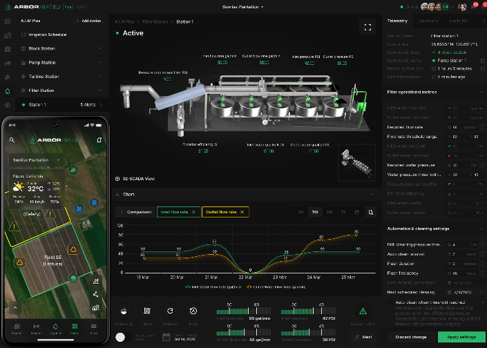
Website and mobile control interfaceDashboard view showing irrigation blocks, station controls, SCADA-style visualization, sensor values, schedules, and alerts.
System Visualization Workflow
The workflow converts the existing farm irrigation hardware into a structured digital visualization system. Each component is modeled, rendered, and exported as an interface-ready asset so the control platform can visually represent the hardware being operated.
01Existing System Review
02SolidWorks Modeling
03KeyShot Rendering
04OBJ Asset Export
05Web/App Visualization
Valve Station & Controller Assets
Six valve-pipe-controller station variants were modeled so different field blocks could be represented accurately in the remote-control system. These assets connect the digital dashboard controls with the physical irrigation valves, pipe assemblies, and controller hardware used across the farm.
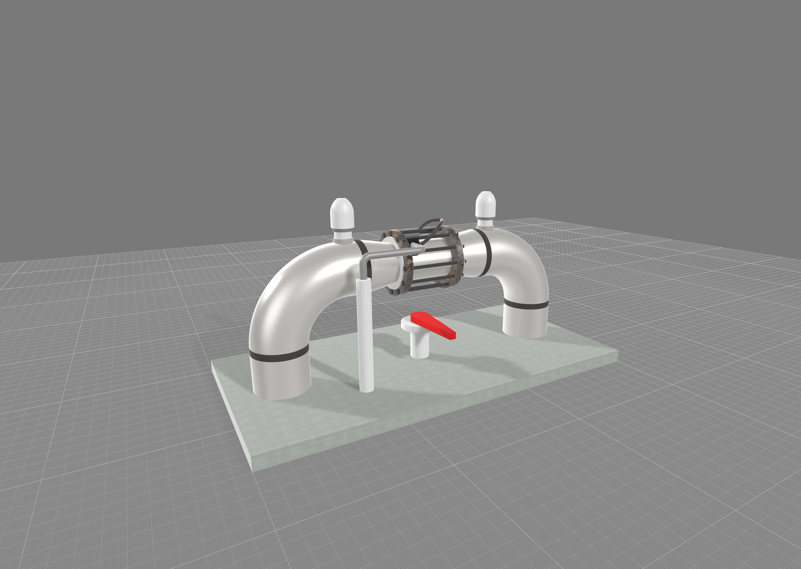
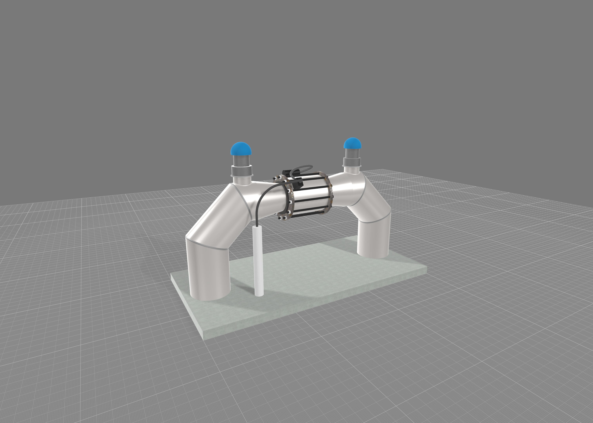
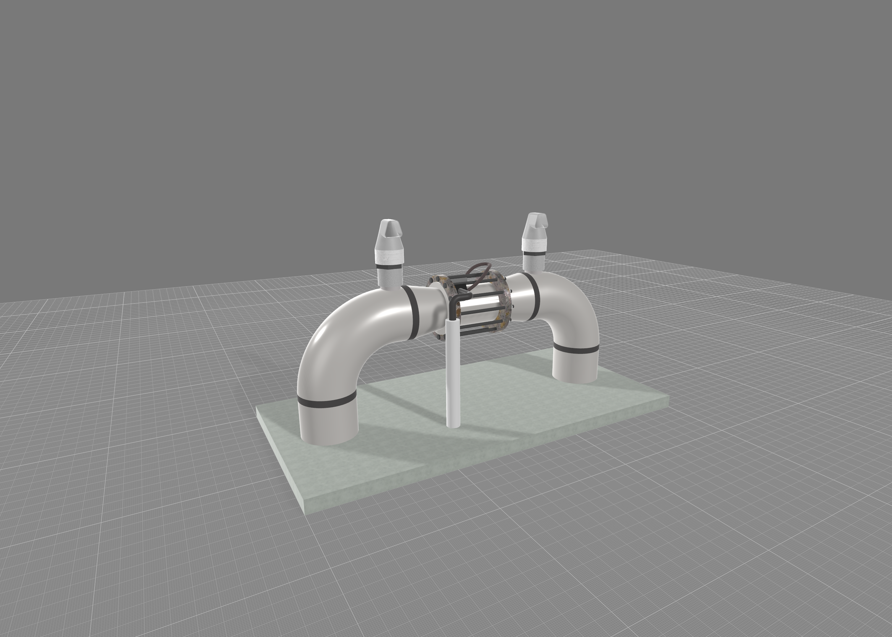
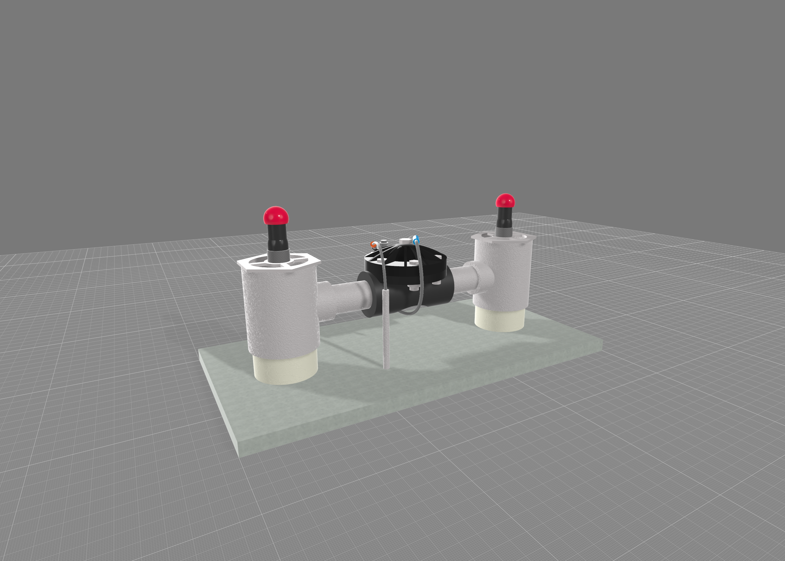
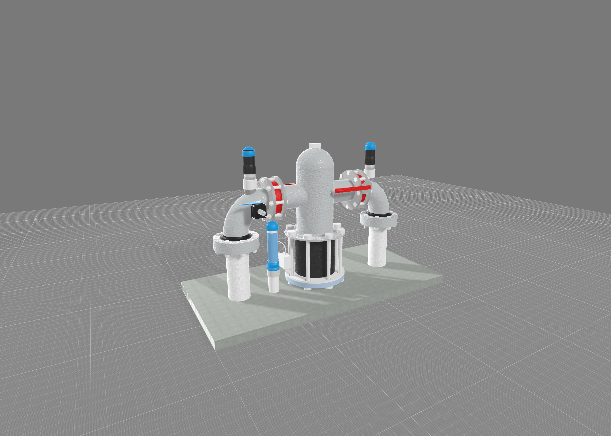
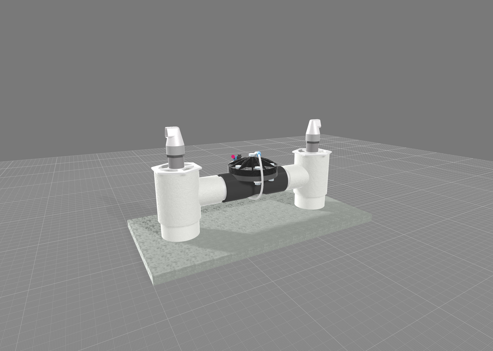
Valve station asset setSix different valve-pipe-controller station variants prepared for block-level irrigation control visualization.
Modeled Irrigation Components
The digital visualization layer includes the main hardware blocks that users interact with in the smart irrigation platform: filtration plant, valve stations, pipe connections, VFD/controller units, solar-assisted field controller nodes, sensors, and irrigation zones.
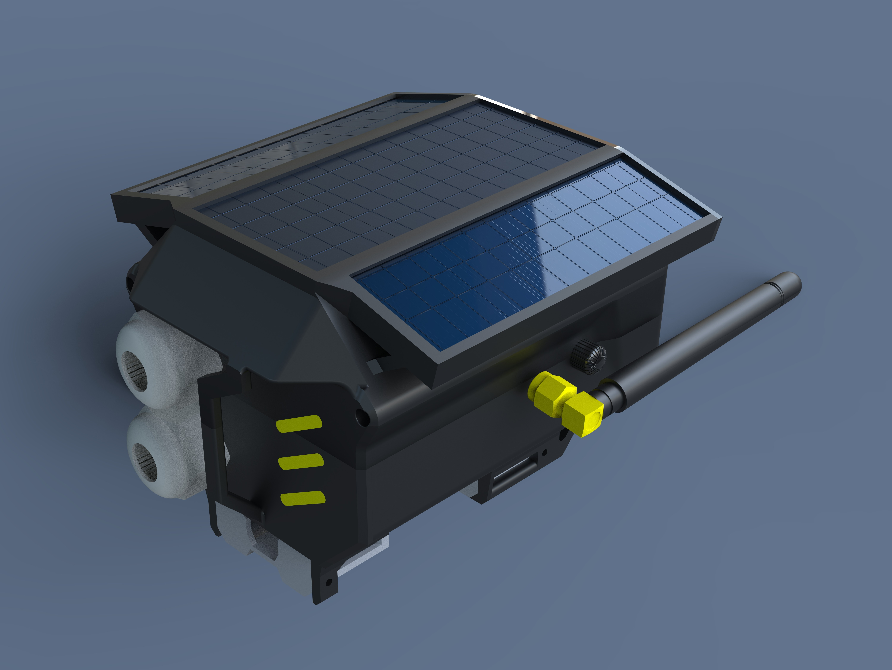
Solar-assisted control valve nodeField-level smart irrigation controller asset with solar panel, enclosure, antenna, and pipe connection detail.
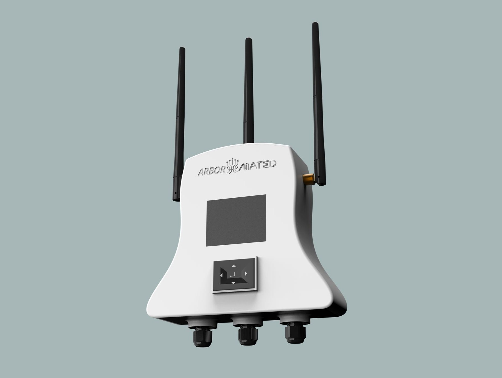
VFD / controller unitControl-hardware visualization for representing irrigation automation and station-control equipment.
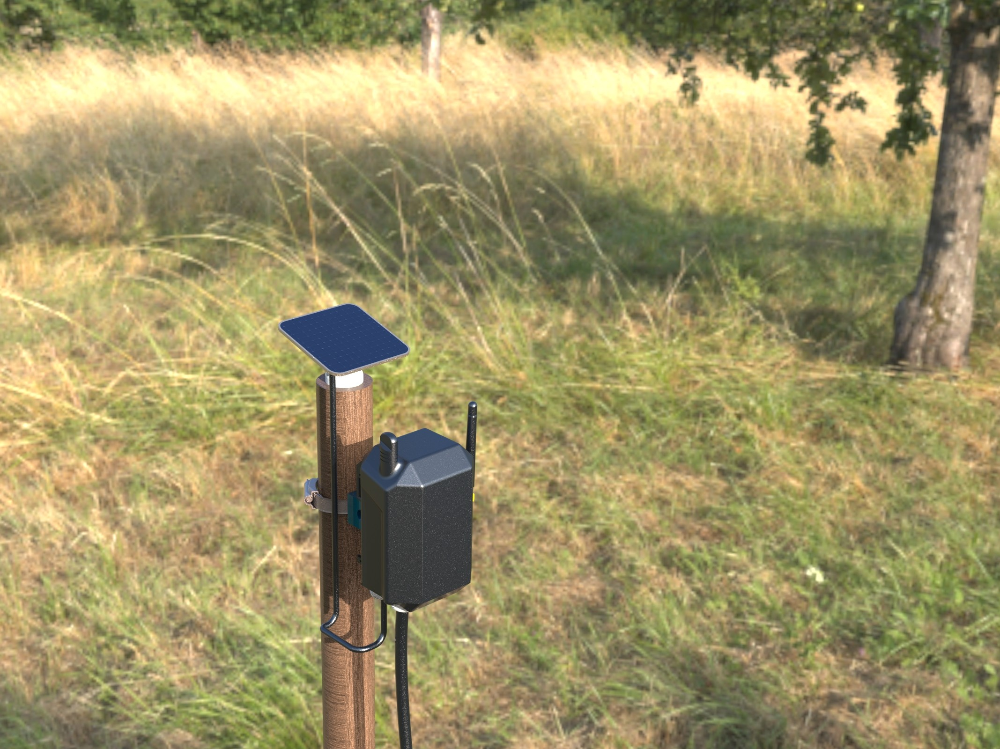
Field-level visualizationFarm-context render showing how a controller node can appear within the irrigation field environment.Connector component renderSmall irrigation connection asset prepared as part of the broader component library.
Online Simulation & Remote-Control Implementation
The project should be understood as an automation and visualization system moving toward remote-control implementation, not as a fully deployed claim. The developed 3D assets support online simulation, dashboard interaction, and the user experience needed for remote irrigation operation.
Final Outcome
The Arbormated project produced a complete 3D visualization layer for a real international smart irrigation automation platform. The work included SolidWorks modeling, KeyShot rendering, dashboard-ready component visuals, valve station assets, controller-node renders, and 20+ OBJ exports for use in the online control environment.
The resulting asset system supports remote irrigation control by making filtration units, valve stations, VFDs, controllers, pipe assemblies, sensors, and field blocks easier to identify, understand, and operate through the web/mobile dashboard.
Daira Engineering • Edge AI Product Development • Prototyping Stage
Embedded AI Vision Product on STM32N6570-DK
A prototyping-stage embedded AI product platform built around the STM32N6570-DK board and YOLOv11, being developed to support practical computer-vision applications for manufacturing, healthcare, safety, and security environments.
STM32N6570-DKPrototyping board for embedded AI development
YOLOv11Vision model direction for object detection
Edge AILocal inference on embedded hardware
Multi-ApplicationManufacturing, healthcare, safety, and security
In DevelopmentPlanning and board-programming stage
Product Overview
This project is being developed as an embedded AI product platform, not a single fixed application. The STM32N6570-DK board is being used as the prototyping hardware to explore how YOLOv11-based vision applications can run on edge devices for real-world industrial and monitoring use cases.
The product direction is to create a flexible AI vision system that can be adapted for different application environments, including manufacturing inspection, healthcare monitoring, safety compliance, and security-based detection or alerting.
STM32N6570-DKYOLOv11Edge AIEmbedded VisionObject DetectionAI Product PlatformPrototype Development
Why This Product Matters
Many AI vision systems depend on external computers or cloud processing. This product direction focuses on bringing vision intelligence closer to the device itself, allowing application-specific detection, monitoring, and decision support directly on embedded edge hardware.
Product Direction
Prototype Platform For
STM32N6570-DK board programming
YOLOv11-based vision deployment exploration
Camera and peripheral integration planning
Edge AI inference workflow development
Designed to Support
Manufacturing industry applications
Healthcare monitoring concepts
Safety and compliance use cases
Security and surveillance applications
Being Developed For
Local AI decision support
Embedded computer-vision processing
Application-specific object detection
Future product-level deployment refinement
Application Directions Include
The platform is being planned as a flexible AI product that can be adapted to several detection and monitoring problems instead of being limited to one application.
Manufacturing
Object presence checking
Defect or quality-inspection concepts
Machine-zone and worker-safety monitoring
Production-line visual decision support
Healthcare & Safety
Patient or staff movement monitoring concepts
PPE detection and safety compliance
Restricted-area monitoring
Fall or emergency-detection direction
Security
Intrusion-detection concepts
Person or object detection
Real-time alert-generation direction
On-device monitoring without full PC dependency
Engineering Scope
The current engineering scope focuses on building the foundation for the embedded AI product: programming the STM32N6570-DK board, planning the YOLOv11 deployment workflow, studying input/output and peripheral interfacing, and defining how different application models can be tested on the same edge-AI platform.
Started programming and experimenting with the STM32N6570-DK development board.
Selected YOLOv11 as the core computer-vision model direction for object-detection applications.
Planning embedded AI workflows for manufacturing, healthcare, safety, and security use cases.
Exploring product architecture for local inference, application-specific detection, and hardware-level refinement.
Development Workflow
01Application Planning
02Board Programming
03YOLOv11 Pipeline
04Edge Inference Testing
05Product Refinement
Current Development Status
The project is currently in the planning and prototyping phase. The STM32N6570-DK board is available, board-level programming has started, and the product direction is being shaped around YOLOv11-based embedded vision applications. At this stage, the project is presented as an active development platform, not as a fully deployed industrial product.
Current Outcome
The current outcome is a defined embedded AI product direction with a real STM32N6570-DK prototyping foundation, YOLOv11 selected as the vision model direction, and multiple planned application paths across manufacturing, healthcare, safety, and security. The next development step is to progress from board programming and application planning toward model deployment, peripheral integration, and on-device inference testing.


![Embedded AI Vision Product on STM32N6570-DK concept cover](data:image/svg+xml;charset=UTF-8,%3Csvg%20xmlns=%22http://www.w3.org/2000/svg%22%20viewBox=%220%200%201600%20900%22%20role=%22img%22%20aria-label=%22Embedded%20AI%20vision%20product%20concept%20using%20STM32N6570-DK%20and%20YOLOv11%22%3E%0A%3Cdefs%3E%0A%3ClinearGradient%20id=%22bg%22%20x1=%220%22%20y1=%220%22%20x2=%221%22%20y2=%221%22%3E%3Cstop%20offset=%220%22%20stop-color=%22%23071827%22/%3E%3Cstop%20offset=%220.55%22%20stop-color=%22%230d3245%22/%3E%3Cstop%20offset=%221%22%20stop-color=%22%232c7a9b%22/%3E%3C/linearGradient%3E%0A%3CradialGradient%20id=%22glow%22%20cx=%2270%25%22%20cy=%2228%25%22%20r=%2252%25%22%3E%3Cstop%20offset=%220%22%20stop-color=%22%2364d2e8%22%20stop-opacity=%220.55%22/%3E%3Cstop%20offset=%221%22%20stop-color=%22%2364d2e8%22%20stop-opacity=%220%22/%3E%3C/radialGradient%3E%0A%3C/defs%3E%0A%3Crect%20width=%221600%22%20height=%22900%22%20fill=%22url%28%23bg%29%22/%3E%0A%3Crect%20width=%221600%22%20height=%22900%22%20fill=%22url%28%23glow%29%22/%3E%0A%3Cg%20opacity=%220.16%22%20stroke=%22%23ffffff%22%20stroke-width=%222%22%20fill=%22none%22%3E%0A%3Cpath%20d=%22M80%20150h210v120h180v130h220%22/%3E%3Cpath%20d=%22M1180%20110h160v160h160%22/%3E%3Cpath%20d=%22M170%20710h260v-110h240%22/%3E%3Cpath%20d=%22M970%20760h250v-180h240%22/%3E%0A%3Ccircle%20cx=%22290%22%20cy=%22150%22%20r=%228%22%20fill=%22%23ffffff%22/%3E%3Ccircle%20cx=%22470%22%20cy=%22400%22%20r=%228%22%20fill=%22%23ffffff%22/%3E%3Ccircle%20cx=%221340%22%20cy=%22270%22%20r=%228%22%20fill=%22%23ffffff%22/%3E%3Ccircle%20cx=%221220%22%20cy=%22580%22%20r=%228%22%20fill=%22%23ffffff%22/%3E%0A%3C/g%3E%0A%3Cg%20transform=%22translate%28430%20185%29%22%3E%0A%3Crect%20x=%220%22%20y=%220%22%20width=%22740%22%20height=%22500%22%20rx=%2242%22%20fill=%22%23f7fafc%22%20opacity=%220.96%22/%3E%0A%3Crect%20x=%2242%22%20y=%2242%22%20width=%22656%22%20height=%22416%22%20rx=%2228%22%20fill=%22%230a1929%22/%3E%0A%3Crect%20x=%22105%22%20y=%2292%22%20width=%22250%22%20height=%22145%22%20rx=%2218%22%20fill=%22none%22%20stroke=%22%2350bee8%22%20stroke-width=%2210%22/%3E%0A%3Crect%20x=%22395%22%20y=%22118%22%20width=%22198%22%20height=%22110%22%20rx=%2218%22%20fill=%22none%22%20stroke=%22%23ffffff%22%20stroke-opacity=%220.8%22%20stroke-width=%228%22/%3E%0A%3Crect%20x=%22155%22%20y=%22285%22%20width=%22330%22%20height=%2280%22%20rx=%2214%22%20fill=%22none%22%20stroke=%22%2364d2e8%22%20stroke-width=%228%22/%3E%0A%3Cpath%20d=%22M115%20395h470%22%20stroke=%22%23ffffff%22%20stroke-opacity=%220.26%22%20stroke-width=%2212%22%20stroke-linecap=%22round%22/%3E%0A%3Cpath%20d=%22M115%20425h310%22%20stroke=%22%23ffffff%22%20stroke-opacity=%220.18%22%20stroke-width=%2212%22%20stroke-linecap=%22round%22/%3E%0A%3Ccircle%20cx=%22605%22%20cy=%22365%22%20r=%2244%22%20fill=%22none%22%20stroke=%22%2350bee8%22%20stroke-width=%229%22/%3E%0A%3Ccircle%20cx=%22605%22%20cy=%22365%22%20r=%2214%22%20fill=%22%2350bee8%22/%3E%0A%3C/g%3E%0A%3Cg%20transform=%22translate%28255%20250%29%22%20fill=%22none%22%20stroke=%22%23ffffff%22%20stroke-width=%228%22%20opacity=%220.92%22%3E%0A%3Crect%20x=%220%22%20y=%220%22%20width=%22250%22%20height=%22160%22%20rx=%2224%22/%3E%0A%3Cpath%20d=%22M48%2050h154M48%2088h96M48%20126h126%22%20stroke-linecap=%22round%22/%3E%0A%3C/g%3E%0A%3Cg%20transform=%22translate%281098%20255%29%22%20fill=%22none%22%20stroke=%22%23ffffff%22%20stroke-width=%228%22%20opacity=%220.92%22%3E%0A%3Crect%20x=%220%22%20y=%220%22%20width=%22238%22%20height=%22160%22%20rx=%2224%22/%3E%0A%3Ccircle%20cx=%2278%22%20cy=%2282%22%20r=%2234%22/%3E%3Cpath%20d=%22M125%20116l62%200%22%20stroke-linecap=%22round%22/%3E%3Cpath%20d=%22M156%2084v62%22%20stroke-linecap=%22round%22/%3E%0A%3C/g%3E%0A%3Cg%20transform=%22translate%28500%20700%29%22%3E%0A%3Crect%20x=%220%22%20y=%220%22%20width=%22600%22%20height=%2268%22%20rx=%2234%22%20fill=%22%23ffffff%22%20opacity=%220.94%22/%3E%0A%3Ctext%20x=%22300%22%20y=%2243%22%20text-anchor=%22middle%22%20font-family=%22Montserrat,%20Arial,%20sans-serif%22%20font-size=%2228%22%20font-weight=%22700%22%20fill=%22%230a1929%22%3ESTM32N6570-DK%20%E2%80%A2%20YOLOv11%20%E2%80%A2%20Edge%20AI%3C/text%3E%0A%3C/g%3E%0A%3C/svg%3E)


![3D printer icon for CNC, 3D Printing, and Molding](data:image/svg+xml,%3Csvg%20xmlns=%22http://www.w3.org/2000/svg%22%20viewBox=%220%200%20128%20128%22%3E%3Cdefs%3E%3ClinearGradient%20id=%22frame%22%20x1=%2218%22%20y1=%2210%22%20x2=%22106%22%20y2=%22102%22%20gradientUnits=%22userSpaceOnUse%22%3E%3Cstop%20offset=%220%22%20stop-color=%22%23dfe8ef%22/%3E%3Cstop%20offset=%220.45%22%20stop-color=%22%238fa4b2%22/%3E%3Cstop%20offset=%221%22%20stop-color=%22%23566977%22/%3E%3C/linearGradient%3E%3ClinearGradient%20id=%22bed%22%20x1=%2226%22%20y1=%2270%22%20x2=%22103%22%20y2=%22103%22%20gradientUnits=%22userSpaceOnUse%22%3E%3Cstop%20offset=%220%22%20stop-color=%22%2349d5ff%22/%3E%3Cstop%20offset=%221%22%20stop-color=%22%232f68c8%22/%3E%3C/linearGradient%3E%3ClinearGradient%20id=%22head%22%20x1=%2249%22%20y1=%2234%22%20x2=%2278%22%20y2=%2266%22%20gradientUnits=%22userSpaceOnUse%22%3E%3Cstop%20offset=%220%22%20stop-color=%22%23ffb36b%22/%3E%3Cstop%20offset=%220.55%22%20stop-color=%22%23ff6a3a%22/%3E%3Cstop%20offset=%221%22%20stop-color=%22%23c6267b%22/%3E%3C/linearGradient%3E%3ClinearGradient%20id=%22print%22%20x1=%2249%22%20y1=%2275%22%20x2=%2280%22%20y2=%2297%22%20gradientUnits=%22userSpaceOnUse%22%3E%3Cstop%20offset=%220%22%20stop-color=%22%23ffffff%22/%3E%3Cstop%20offset=%221%22%20stop-color=%22%23d8eef7%22/%3E%3C/linearGradient%3E%3Cfilter%20id=%22shadow%22%20x=%22-30%25%22%20y=%22-30%25%22%20width=%22160%25%22%20height=%22170%25%22%3E%3CfeDropShadow%20dx=%220%22%20dy=%227%22%20stdDeviation=%226%22%20flood-color=%22%231b2a38%22%20flood-opacity=%22.25%22/%3E%3C/filter%3E%3Cfilter%20id=%22soft%22%20x=%22-20%25%22%20y=%22-20%25%22%20width=%22140%25%22%20height=%22140%25%22%3E%3CfeDropShadow%20dx=%220%22%20dy=%222%22%20stdDeviation=%222%22%20flood-color=%22%231b2a38%22%20flood-opacity=%22.18%22/%3E%3C/filter%3E%3C/defs%3E%3Cellipse%20cx=%2264%22%20cy=%22111%22%20rx=%2245%22%20ry=%2210%22%20fill=%22%232b4151%22%20opacity=%22.15%22/%3E%3Cg%20filter=%22url%28%23shadow%29%22%3E%3Crect%20x=%2225%22%20y=%2219%22%20width=%2278%22%20height=%2210%22%20rx=%225%22%20fill=%22url%28%23frame%29%22/%3E%3Crect%20x=%2228%22%20y=%2225%22%20width=%229%22%20height=%2262%22%20rx=%224%22%20fill=%22url%28%23frame%29%22/%3E%3Crect%20x=%2291%22%20y=%2225%22%20width=%229%22%20height=%2262%22%20rx=%224%22%20fill=%22url%28%23frame%29%22/%3E%3Crect%20x=%2237%22%20y=%2243%22%20width=%2254%22%20height=%227%22%20rx=%223.5%22%20fill=%22%2344596a%22/%3E%3Ccircle%20cx=%2286%22%20cy=%2219%22%20r=%2212%22%20fill=%22%23eef5fb%22/%3E%3Ccircle%20cx=%2286%22%20cy=%2219%22%20r=%227%22%20fill=%22%2375c9ee%22/%3E%3Ccircle%20cx=%2286%22%20cy=%2219%22%20r=%223%22%20fill=%22%232f68c8%22/%3E%3Crect%20x=%2252%22%20y=%2235%22%20width=%2225%22%20height=%2225%22%20rx=%227%22%20fill=%22url%28%23head%29%22%20filter=%22url%28%23soft%29%22/%3E%3Crect%20x=%2256%22%20y=%2240%22%20width=%2217%22%20height=%227%22%20rx=%222%22%20fill=%22rgba%28255,255,255,.55%29%22/%3E%3Cpath%20d=%22M60%2060h10l-2%208h-6z%22%20fill=%22%233b4650%22/%3E%3Cpath%20d=%22M64%2067l-6%208h12z%22%20fill=%22%23202a33%22/%3E%3Cpath%20d=%22M27%2078h74l9%2015H18z%22%20fill=%22url%28%23bed%29%22/%3E%3Cpath%20d=%22M18%2093h92v9c0%204-3%207-7%207H25c-4%200-7-3-7-7z%22%20fill=%22%233d4e5d%22/%3E%3Cpath%20d=%22M48%2082h33l6%2014H42z%22%20fill=%22url%28%23print%29%22%20opacity=%22.95%22/%3E%3Cpath%20d=%22M48%2082h33l3%206H45z%22%20fill=%22%23ffffff%22%20opacity=%22.55%22/%3E%3C/g%3E%3C/svg%3E)
![Robot icon for Machine Vision and Robotics](data:image/svg+xml,%3Csvg%20xmlns=%22http://www.w3.org/2000/svg%22%20viewBox=%220%200%20128%20128%22%3E%3Cdefs%3E%3ClinearGradient%20id=%22headG%22%20x1=%2230%22%20y1=%2219%22%20x2=%2298%22%20y2=%2278%22%20gradientUnits=%22userSpaceOnUse%22%3E%3Cstop%20offset=%220%22%20stop-color=%22%23ecf7ff%22/%3E%3Cstop%20offset=%220.45%22%20stop-color=%22%238fd6ff%22/%3E%3Cstop%20offset=%221%22%20stop-color=%22%235368e9%22/%3E%3C/linearGradient%3E%3ClinearGradient%20id=%22bodyG%22%20x1=%2239%22%20y1=%2268%22%20x2=%2289%22%20y2=%22111%22%20gradientUnits=%22userSpaceOnUse%22%3E%3Cstop%20offset=%220%22%20stop-color=%22%2353e0ce%22/%3E%3Cstop%20offset=%221%22%20stop-color=%22%232d7be8%22/%3E%3C/linearGradient%3E%3ClinearGradient%20id=%22lensG%22%20x1=%2247%22%20y1=%2240%22%20x2=%2263%22%20y2=%2256%22%20gradientUnits=%22userSpaceOnUse%22%3E%3Cstop%20offset=%220%22%20stop-color=%22%231b2140%22/%3E%3Cstop%20offset=%220.5%22%20stop-color=%22%23203e96%22/%3E%3Cstop%20offset=%221%22%20stop-color=%22%23111827%22/%3E%3C/linearGradient%3E%3ClinearGradient%20id=%22accentG%22%20x1=%2270%22%20y1=%2240%22%20x2=%2284%22%20y2=%2254%22%20gradientUnits=%22userSpaceOnUse%22%3E%3Cstop%20offset=%220%22%20stop-color=%22%2380ffdb%22/%3E%3Cstop%20offset=%221%22%20stop-color=%22%2315b27d%22/%3E%3C/linearGradient%3E%3Cfilter%20id=%22shadow%22%20x=%22-30%25%22%20y=%22-30%25%22%20width=%22160%25%22%20height=%22170%25%22%3E%3CfeDropShadow%20dx=%220%22%20dy=%227%22%20stdDeviation=%226%22%20flood-color=%22%23152033%22%20flood-opacity=%22.25%22/%3E%3C/filter%3E%3C/defs%3E%3Cellipse%20cx=%2264%22%20cy=%22113%22%20rx=%2243%22%20ry=%229%22%20fill=%22%231e2d45%22%20opacity=%22.14%22/%3E%3Cg%20filter=%22url%28%23shadow%29%22%3E%3Cpath%20d=%22M64%2016v-8%22%20stroke=%22%23435468%22%20stroke-width=%225%22%20stroke-linecap=%22round%22/%3E%3Ccircle%20cx=%2264%22%20cy=%227%22%20r=%225%22%20fill=%22%23ff5a7d%22/%3E%3Crect%20x=%2231%22%20y=%2222%22%20width=%2266%22%20height=%2250%22%20rx=%2216%22%20fill=%22url%28%23headG%29%22/%3E%3Cpath%20d=%22M38%2031c7-7%2041-8%2050-1%22%20stroke=%22%23fff%22%20stroke-width=%225%22%20stroke-linecap=%22round%22%20opacity=%22.45%22/%3E%3Ccircle%20cx=%2254%22%20cy=%2248%22%20r=%2211%22%20fill=%22url%28%23lensG%29%22/%3E%3Ccircle%20cx=%2251%22%20cy=%2244%22%20r=%224%22%20fill=%22%2378e7ff%22%20opacity=%22.9%22/%3E%3Ccircle%20cx=%2277%22%20cy=%2248%22%20r=%229%22%20fill=%22url%28%23accentG%29%22/%3E%3Ccircle%20cx=%2274%22%20cy=%2245%22%20r=%223%22%20fill=%22%23ffffff%22%20opacity=%22.8%22/%3E%3Cpath%20d=%22M50%2062c8%205%2020%205%2029%200%22%20stroke=%22%2324415a%22%20stroke-width=%224%22%20stroke-linecap=%22round%22%20opacity=%22.55%22/%3E%3Crect%20x=%2243%22%20y=%2273%22%20width=%2242%22%20height=%2232%22%20rx=%2211%22%20fill=%22url%28%23bodyG%29%22/%3E%3Cpath%20d=%22M54%2081h20%22%20stroke=%22%23ffffff%22%20stroke-width=%224%22%20stroke-linecap=%22round%22%20opacity=%22.55%22/%3E%3Ccircle%20cx=%2256%22%20cy=%2294%22%20r=%223%22%20fill=%22%23ffffff%22%20opacity=%22.75%22/%3E%3Ccircle%20cx=%2267%22%20cy=%2294%22%20r=%223%22%20fill=%22%23ffffff%22%20opacity=%22.75%22/%3E%3Cpath%20d=%22M43%2082c-11%201-17%208-18%2018%22%20stroke=%22%2352677a%22%20stroke-width=%229%22%20stroke-linecap=%22round%22/%3E%3Cpath%20d=%22M85%2082c11%201%2017%208%2018%2018%22%20stroke=%22%2352677a%22%20stroke-width=%229%22%20stroke-linecap=%22round%22/%3E%3Ccircle%20cx=%2224%22%20cy=%22101%22%20r=%227%22%20fill=%22%23ffb347%22/%3E%3Ccircle%20cx=%22104%22%20cy=%22101%22%20r=%227%22%20fill=%22%23ffb347%22/%3E%3C/g%3E%3C/svg%3E)